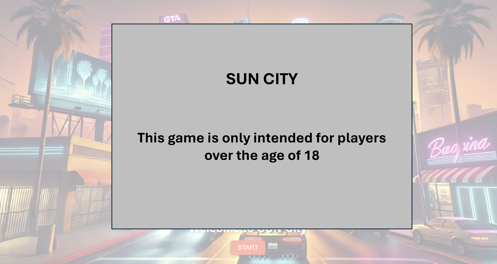

Mockup of the Project
By Florent Epiney the 24/03/2025 at 22:40
Warning Page
When the players enter on our website, they must first confirm his age as the content of our game can include violence.

Access denied Page
In case the players are less than 18 years old, they arrive on this advertising page.
Homepage
On the homepage, the players have 3 possibilities:
- Play the game
- See the leaderboard
- Leave the game

Selection of the avater and the player
If the players click on the button PLAY, they will be redirected to the selection of the avatar and the player. Both players can choose a different alias. The alias will serve to etablish the leaderboard. If an alias is already used, the new score will override the ancien one. Their location is by default automatically provided by an API. However, they can correct it if they want. Furthermore, they can choose between a set of avatars. They have just to drag and drop the wished one inside the dedicated field.
Count down
The countdown serves to prepare the players before the game starts. It allows them to get ready and to be in the best conditions to play. It lasts 3 seconds.

Game
The game page is divided in 2 parts, one for each player. It includes the game field with the own view of the player and a board with the life points, the timers and some indications. At the top, there is a Pause button. At the bottom, there is 2 buttons as to play or stop the game music.

Game pause
If one of the player click on the Pause button, the game will be paused and a popup appears. The players can decide either to continue the game, or to restart from beginning or to leave the game and go back to the homepage. By the 2 last options, the current score gets lost.

Game finished
If one of the player dies, the party is over. The winner and the loser are announced. After 5 seconds, the players are redirected to the leaderboard.

Leaderboard
On the leaderboard, the players can see all the result of the previous games. The leaderboard is sorted by the score. The player with the highest score is on the top. The score is calculated according to the time the player survived in Sun City.

Exit Page
When the players click on the EXIT button on the hompage, they arrive on a page wishing them "Goodbye".